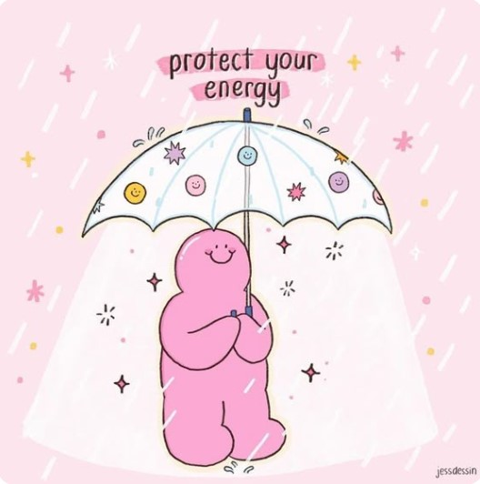

The Petal Project
Spreading awareness about mental health, breaking stigmas, and providing hope one post at a time.
What We Do:
- Share resources and tips for mental wellness
- Raise awareness about less-talked-about mental health conditions
- Create supportive spaces through social media
- Encourage positivity, healing, and understanding
Through colorful posts, uplifting messages, and facts, we aim to help people feel less alone.
We believe in building community and connection — because mental health matters for everyone.
Follow us on Instagram at @the_petalsproject to stay connected and help us grow our mission.
About Me
Hi! I’m Tanvi, the creator of The Petal Project. I’m passionate about raising awareness for mental health, especially the conditions that don’t get talked about enough. I started this project to help people feel supported, inspired, and informed. Somethings about me is that I love going to the beach, shopping with friends, and going on coffee runs! <3.< /p>